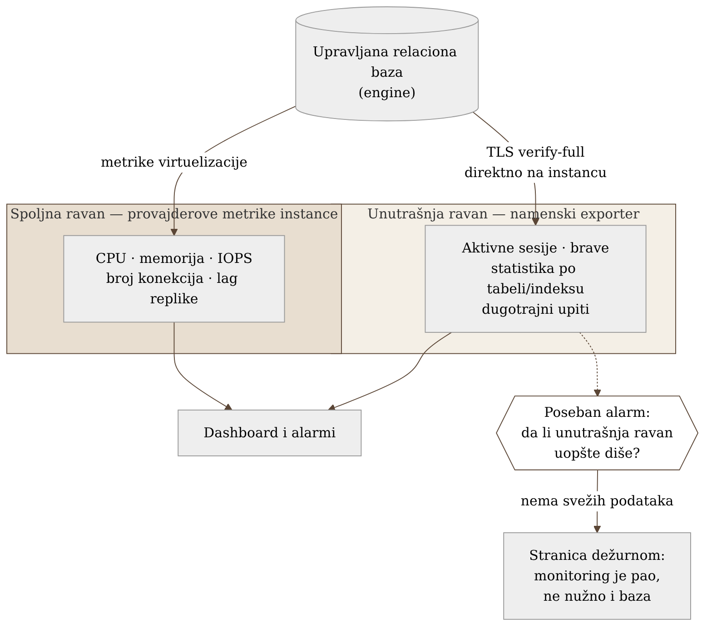
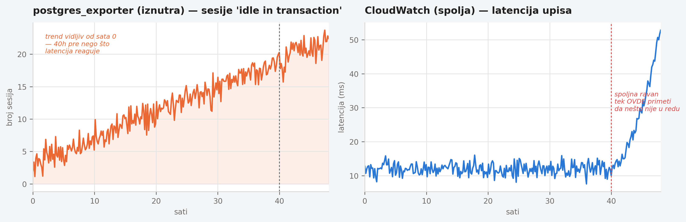

Poglavlje 18 — Baze podataka (upravljane, tipa RDS/Aurora)
Kontrolna tabla u automobilu i dijagnostički port kod mehaničara pokazuju dva različita automobila, iako gledaju u isti motor. Tabla ispred vozača kaže brzinu, obrtaje, temperaturu rashladne tečnosti, nivo goriva — sve što je potrebno da se vozi bezbedno, izmereno spolja, sa senzora koje je proizvođač smatrao dovoljnim za vozača. Mehaničar koji prikopča dijagnostički čitač vidi nešto sasvim drugo: kodove grešaka po pojedinačnom cilindru, istoriju očitavanja senzora kiseonika, koliko puta se menjač prebacio u zaštitni režim prošlog meseca. Ni jedan pogled ne laže. Ali vozač koji gleda samo tablu nikad neće saznati da jedan cilindar propaljuje neredovno već dve nedelje — jer ta informacija jednostavno nije dizajnirana da stigne do table. A mehaničar koji gleda samo dijagnostiku nikad neće znati da li se automobil u tom trenutku uopšte kreće. Upravljana baza podataka se posmatra na potpuno isti način: spolja, kroz tablu koju pruža provajder, i iznutra, kroz dijagnostiku koju pruža sam motor baze.
18.1 Pitanje na koje ovo poglavlje odgovara
Baza podataka je upravljana od strane provajdera — instanca se ne može ulogovati SSH-om, disk se ne vidi direktno, proces se ne može profilisati alatom sa hosta. Šta se onda uopšte može posmatrati, sa koliko poverenja, i zašto jedan jedini pogled — bilo spoljni, bilo unutrašnji — sistematski propušta polovinu problema koji se stvarno dešavaju?
18.2 Kako je to urađeno — praktičan pregled
Dve ravni, nijedna nije podskup druge
Implementacija koju knjiga prati posmatra upravljanu relacionu bazu kroz dve nezavisne ravni prikupljanja, namerno bez pokušaja da se jedna svede na drugu:
- Spoljna ravan — metrike koje provajder izlaže na nivou instance i virtuelizacije: CPU, memorija, IOPS, latencija čitanja/pisanja, broj konekcija, slobodan prostor na disku, lag replike. Ovo je pogled "koliko je mašina zauzeta" — dovoljan da se primeti da nešto nije u redu, nikad dovoljan da se kaže šta.
- Unutrašnja ravan — exporter koji se konektuje direktno na sam bazu-motor i čita njegove interne sistemske tabele: aktivne sesije, brave, statistiku po tabeli i indeksu, replikacione slotove, dugotrajne upite. Ovo je pogled "šta baza zapravo radi" — vidi stvari koje spoljna ravan strukturno ne može da vidi, jer nikad ne postoje van samog procesa baze.
Ključna odluka, izneta eksplicitno u dokumentaciji implementacije: nijedna ravan nije nadskup druge. Curenje konekcija se vidi u internoj ravni (broj otvorenih sesija po korisniku, po stanju) mnogo pre nego što spoljna ravan uopšte primeti porast latencije. Nasuprot tome, potpuni gubitak mrežne dostupnosti do same instance vidi se samo spolja — jer u tom trenutku exporter iznutra ne može ni da se konektuje da bi bilo šta prijavio.
Poseban i lako zaboravljen alarm: monitoring sam pao, ne baza
Implementacija eksplicitno razdvaja dve različite tvrdnje koje se lako pomešaju: "baza ne radi" i "exporter koji prati bazu ne radi." Ako proces koji skreje unutrašnju ravan padne, prestane, ili izgubi kredencijal — svi dashboardi zasnovani na unutrašnjoj ravni odjednom postaju prazni. Bez posebnog alarma, taj prazan dashboard izgleda identično kao "sve je mirno" — što je opasnije od bilo koje stvarne alarme, jer se niko ne javlja dok neko slučajno ne primeti da grafik nedelju dana nije pomerio ni jednu tačku. Implementacija drži poseban, nezavisan alarm koji prati samo da li unutrašnja ravan uopšte isporučuje sveže podatke, potpuno odvojen od bilo kog praga zasnovanog na sadržaju tih podataka.
TLS samo na instancu, nikad kroz posrednika
Konekcija koju unutrašnji exporter koristi za čitanje sistemskih tabela ide isključivo na endpoint pojedinačne instance, sa punom TLS verifikacijom sertifikata i imena hosta — nikad na klasterski/reader endpoint za balansiranje opterećenja, i nikad kroz posrednika za pooling konekcija. Razlog je strukturan, ne stvar ukusa: balansirajući endpoint može u svakom trenutku preusmeriti konekciju na drugu fizičku instancu, a posrednik za pooling po definiciji deli jednu pozadinsku konekciju između više klijenata naizmenično. U oba slučaja, mapiranje "ova sesija u internoj tabeli pripada ovoj konkretnoj instanci/klijentu" prestaje da važi — a to mapiranje je tačno ono što unutrašnja ravan prikupljanja postoji da obezbedi. Prikupljanje mora ići direktno na instancu da bi zadržalo smisao.
Poluga na nivou baze, ne infrastrukture
Kada unutrašnja ravan otkrije sesije koje ostaju otvorene u stanju "neaktivna u transakciji" duže od razumnog vremena — najčešći uzrok polaganog curenja konekcija — postoji poluga koja ne zahteva promenu koda aplikacije: vremensko ograničenje na nivou same baze koje prisilno prekida takvu sesiju posle definisanog perioda mirovanja. Ovo je namerno konfigurisano kao poslednja linija odbrane, ne kao prva — prva linija je i dalje ispravljanje aplikacije koja ostavlja transakcije otvorene — ali poluga postoji upravo zato što aplikacijski kod ne ispravlja uvek sve pozivaoce na vreme.


18.3 Analitički deo — dve ravni kao poznat, ali retko imenovan obrazac
Zvanična preporuka se slaže sa podelom, ali je ne imenuje eksplicitno
Provajderova sopstvena dokumentacija zaista razlikuje tri sloja: metrike na nivou virtuelizacije (dostupne odmah, besplatne), agent na nivou operativnog sistema instance (dublji uvid u procese, sa kašnjenjem uzorkovanja), i sloj koji uzorkuje aktivno opterećenje baze i pripisuje ga konkretnim upitima. Sva tri sloja i dalje posmatraju bazu spolja — ni jedan ne čita direktno interne sistemske tabele samog baza-motora onako kako to radi namenski exporter. Podela koju implementacija koristi — "spolja" naspram "iznutra" — najbliže odgovara starijoj, opštijoj podeli iz literature o pouzdanosti sistema: crna kutija (posmatranje ponašanja spolja, bez pristupa unutrašnjem stanju) naspram bela kutija (instrumentacija koja čita interno stanje sistema direktno). Provajderov sloj koji uzorkuje opterećenje je bliži beloj kutiji od običnih metrika instance, ali i dalje ne zamenjuje direktan uvid u sistemske tabele — brave, bloat po indeksu, tačan tekst dugotrajnog upita u realnom vremenu ostaju vidljivi samo namenskom exporteru.
Gde standard menja zaključak: posrednik za pooling i mapiranje sesija
Zvanična dokumentacija posrednika za pooling konekcija potvrđuje tačno ono što je implementacija pretpostavila bez čitanja te dokumentacije: pod normalnim režimom rada, posrednik pozajmljuje pozadinsku konekciju po transakciji i vraća je u zajednički bazen odmah posle — što znači da se identifikator sesije u internim sistemskim tabelama deli i ponovo koristi između mnogo različitih klijenata tokom vremena. Postoji i ugrađeni bezbednosni ventil: kada se dogodi promena stanja sesije koja se ne može bezbedno deliti (npr. privremene tabele, pripremljeni iskazi), posrednik se prikva na fiksnu 1:1 konekciju za ostatak te sesije — vraćajući mogućnost praćenja za tu jednu konekciju, ali po ceni gubitka efikasnosti poolinga. Zvanično upozorenje je eksplicitno: široko rasprostranjeno prikivanje "smanjuje efikasnost ponovne upotrebe konekcija" i preporučuje se izbegavanje njegovih okidača u aplikativnom kodu, ne oslanjanje na prikivanje kao normalno stanje. Praktična posledica, potvrđena i implementacijom i zvaničnom dokumentacijom: praćenje na nivou sesije kroz interne sistemske tabele je pouzdano samo za konekcije koje idu direktno na instancu — tačno razlog zašto je odluka o zaobilaženju posrednika i balansirajućeg endpointa strukturna nužnost, ne preterana opreznost.
Alarm "monitoring je pao" kao poznat, ali ne i AWS-nativan obrazac
Alarm koji proverava da li interna ravan uopšte isporučuje sveže podatke, nezavisno od sadržaja tih podataka, odgovara dobro poznatom obrascu u svetu Prometheus/SRE alarmiranja — često nazvanom "mrtvačev prekidač": alarm koji, za razliku od svih ostalih, okida tačno onda kada prestane da prima otkucaje, hvatajući tihi pad same monitoring cevi (pad exportera, gubitak scrape mete) koji bi inače ostao neprimećen kao lažna tišina. Vredno je primetiti da ovaj obrazac nije nativno ugrađen u provajderovu platformu za metrike instance — on je specifičan za Prometheus-stil prikupljanja, gde je odsustvo podataka razlikovano od podatka "nula". To znači da implementacija ovaj alarm mora sama izgraditi, van onoga što provajder nudi po difoltu — što i jeste tačno ono što je urađeno.
TLS verify-full kao zvanično preporučena, ne proizvoljna postavka
Zvanična preporuka za produkcione radne opterećenja koja rukuju osetljivim podacima rangira nivoe verifikacije TLS konekcije eksplicitno: najniži nivoi ne pružaju stvarnu zaštitu, srednji nivo proverava lanac sertifikata ali ne i ime hosta, a najviši nivo — koji proverava i potpis sertifikata i da se ime hosta poklapa sa serverom na koji se stvarno konektuje — opisan je kao preporučen za svako produkciono opterećenje koje rukuje osetljivim podacima. Implementacija koristi tačno taj najviši nivo, i to isključivo protiv endpointa pojedinačne instance — dvostruko usklađeno sa preporukom, jednom kroz nivo verifikacije, jednom kroz izbor endpointa.
Kontrafaktički scenario: šta bi standardni pristup propustio
Zamislimo tim koji je pratio samo provajderove standardne metrike instance, bez posebnog exportera i bez posebnog alarma za njegovu dostupnost — udžbenički, "dovoljno dobro" pristup. Curenje konekcija bi se prvo primetilo tek kada broj konekcija priđe granici i latencija počne primetno da raste — što znači da bi se problem otkrio u trenutku kada je već blizu ozbiljnog ispada, umesto sati ili dana ranije, dok je još bio samo trend u broju "neaktivnih u transakciji" sesija. A da je exporter u takvom postavljanju uopšte i postojao, ali bez posebnog alarma za njegovu dostupnost, njegov pad bi izgledao potpuno identično kao "sve je u redu" — dashboard prazan, bez ijedne alarme, dok bi neko ručno primetio da grafik danima nije pomeren tek kada ga zatreba za dijagnozu potpuno drugog problema.
Vratimo se na kontrolnu tablu i dijagnostički port s početka poglavlja. Vozač koji vozi gledajući samo tablu ne vozi neoprezno — vozi sa tačno onoliko informacije koliko mu je tabla dizajnirana da pruži, ni manje ni više. Problem nastaje samo kad se zaboravi da tabla nije kompletna slika motora, i kad se dijagnostički port priključi tek posle kvara, umesto redovno, kao drugi, jednako legitiman izvor istine.
18.4 Skupljena pravila iz ovog poglavlja
- Prati upravljanu bazu kroz dve nezavisne ravni — spoljnu (provajderove metrike instance) i unutrašnju (exporter direktno na engine) — i ne pokušavaj da jednu svedeš na drugu; svaka vidi stvari koje druga strukturno ne može.
- Drži poseban, nezavisan alarm koji proverava samo da li unutrašnja ravan uopšte isporučuje sveže podatke — prazan dashboard bez ijedne alarme je opasniji od dashboarda punog alarmi, jer izgleda identično kao "sve je mirno."
- Konektuj unutrašnji exporter isključivo na endpoint pojedinačne instance, sa punom TLS verifikacijom imena hosta — nikad kroz balansirajući endpoint ili posrednik za pooling, jer oba brišu mapiranje sesije na instancu koje unutrašnja ravan postoji da obezbedi.
- Kad otkriješ sesije zaglavljene "neaktivne u transakciji," koristi vremensko ograničenje na nivou same baze kao poslednju liniju odbrane — ne kao zamenu za popravku aplikativnog koda koji ih ostavlja otvorene.
- Ne meri uspeh monitoringa time da li dashboard izgleda mirno — meri ga time da li znaš, sa sigurnošću, da li je taj mir stvaran ili je samo odsustvo podataka.
18.5 Vežba za čitaoca
Proveri da li tvoj tim ima poseban alarm koji prati isključivo dostupnost samog mehanizma za prikupljanje metrika baze — nezavisno od bilo kog praga zasnovanog na sadržaju tih metrika. Ako takav alarm ne postoji, zamisli scenario u kom taj mehanizam prestane da radi u petak uveče: koliko dugo bi prošlo pre nego što bi neko primetio da dashboard koji gledaju već danima ne pokazuje ništa novo?
Izvori korišćeni u analitičkom delu
- Monitoring tools for Amazon Aurora — AWS Aurora User Guide
- Monitoring OS metrics with Enhanced Monitoring — AWS Aurora User Guide
- Chapter 6: Monitoring Distributed Systems — Google SRE Book
- Avoiding pinning an RDS Proxy — AWS RDS User Guide
- RDS Proxy concepts and terminology — AWS RDS User Guide
- Securing Your Monitoring Stack with a Dead Man's Switch
- Enforcing TLS and managing certificate rotation for RDS and Aurora PostgreSQL — AWS Database Blog